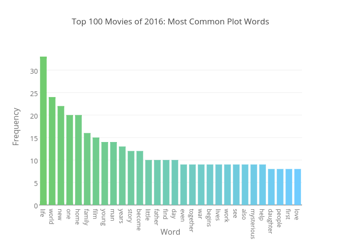

Welcome to my digital portfolio!
I’m Mackenzie Francisco, a Toledo-born, Michigan-based data analyst and social media strategist. I'm a senior at the University of Michigan, a dancer, and Netflix enthusiast. I hope you'll stick around to learn more about me, what I've been working on, and what I have planned for the future!
Projects
